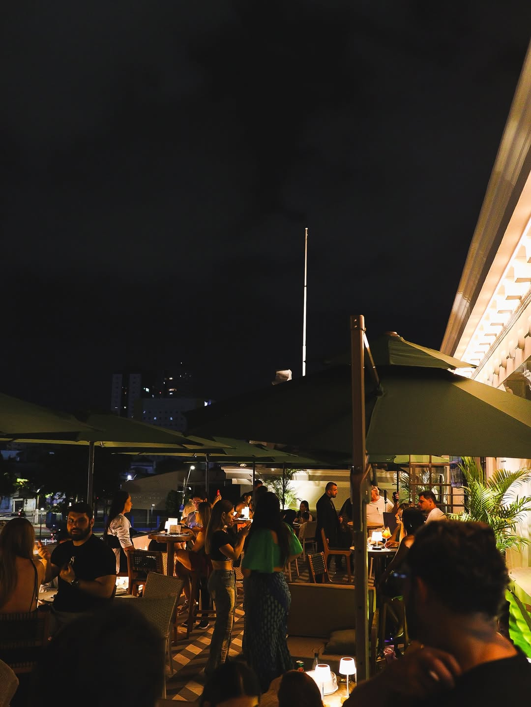

No SB rooftop, cada prato começa com o respeito sagrado aos ciclos da floresta e à riqueza dos nossos rios. Nossa abordagem culinária exalta a ancestralidade paraense, combinando técnicas tradicionais com a criatividade contemporânea. O resultado são sabores intensos, autênticos e refinados, que honram a nossa terra.
Acreditamos que sentar-se à mesa deve ser mais do que uma refeição — deve ser uma imersão sensorial e cultural. Cada aroma de tucupi e chicória, cada textura de farinha d'água e cada apresentação são cuidadosamente pensados para criar uma conexão profunda entre a nossa biodiversidade, o ambiente e as pessoas.
Inspirada na força, na exuberância e na sazonalidade da maior floresta tropical do mundo, nossa filosofia celebra a riqueza dos ingredientes nativos e o prazer atemporal de reunir as pessoas em torno de uma gastronomia que conta histórias.
HOME